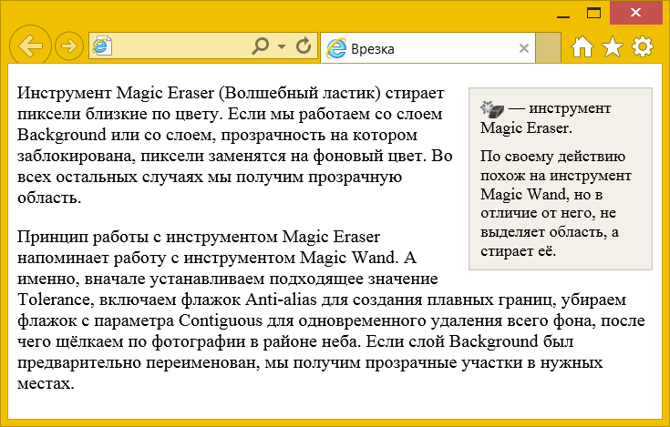
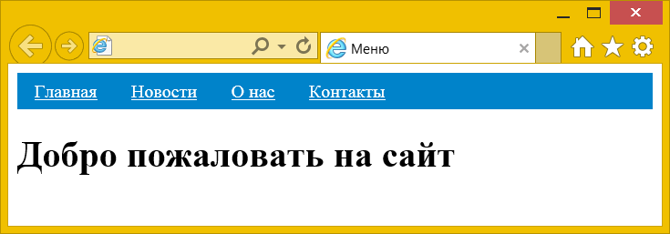
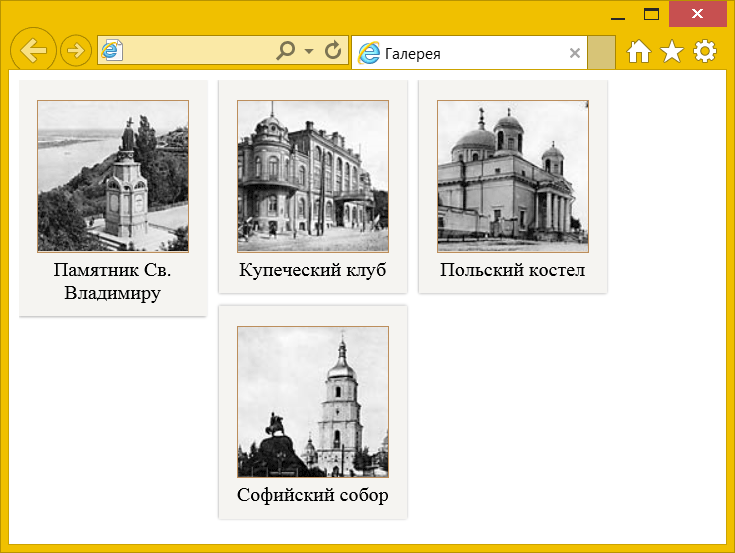
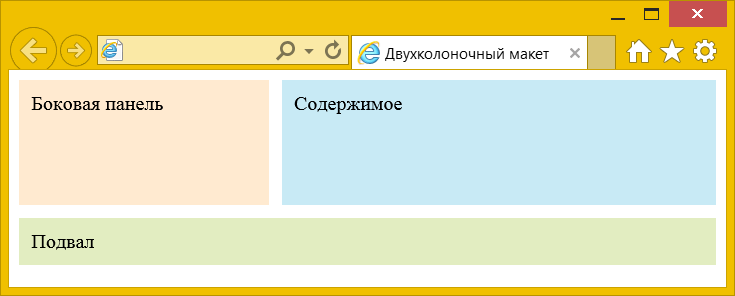
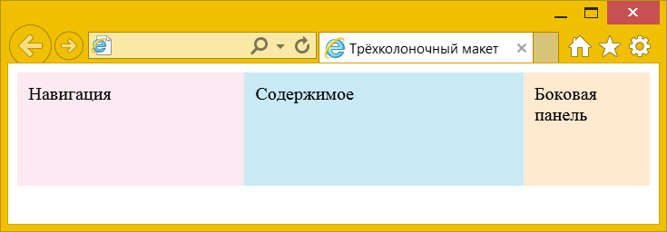

С помощью свойства float можно размещать элементы по горизонтали рядом друг с другом, что позволяет верстать типовые фрагменты веб-страниц, вроде врезок, горизонтальных меню, каталога товаров, колонок и др. Ниже рассмотрим несколько случаев применения float на практике.
Создание врезок
Врезкой называется блок с рисунками и текстом, который встраивается в основной текст. Врезка обычно располагается по левому или правому краю текстового блока, а основной текст обтекает её с других сторон (рис. 1).

Рис. 1. Вид врезки
Чтобы врезка выделялась в тексте, у неё обычно устанавливают фоновый цвет и добавляют рамку (пример 1).
Пример 1. Добавление врезки
<!DOCTYPE html>
<html>
<head>
<meta charset="utf-8">
<title>Врезка</title>
<style>
aside {
float: right; /* Размещаем справа */
background: #F3F0E9; /* Цвет фона */
border: 1px solid #cbc8c5; /* Параметры границы */
padding: 0 10px; /* Поля */
margin: 5px 0 5px 10px; /* Отступы */
width: 140px; /* Ширина */
font-size: 0.9em; /* Размер шрифта */
}
aside p { margin: 0.6em 0; }
aside img {
vertical-align: middle; /* Выравнивание по середине строки */
}
</style>
</head>
<body>
<aside>
<p><img src="image/magiceraser.png" width="21" height="15" alt="Magic Eraser"> —
инструмент Magic Eraser.</p>
<p>По своему действию похож на инструмент Magic Wand, но в отличие от
него, не выделяет область, а стирает её.</p>
</aside>
<p>Инструмент Magic Eraser (Волшебный ластик) стирает пиксели близкие по
цвету. Если мы работаем со слоем Background или со слоем, прозрачность
на котором заблокирована, пиксели заменятся на фоновый цвет. Во всех
остальных случаях мы получим прозрачную область.</p>
<p>Принцип работы с инструментом Magic Eraser напоминает работу с
инструментом Magic Wand. А именно, вначале устанавливаем подходящее
значение Tolerance, включаем флажок Anti-alias для создания плавных
границ, убираем флажок с параметра Contiguous для одновременного удаления
всего фона, после чего щёлкаем по фотографии в районе неба. Если слой
Background был предварительно переименован, мы получим прозрачные
участки в нужных местах.</p>
</body>
</html>При создании врезок желательно ограничить её ширину с помощью свойства width. Иначе размер блока окажется гораздо шире, чем это требуется.
Горизонтальное меню
Для создания различных меню обычно применяется элемент <ul>, он обеспечивает наглядную структуру и его легко стилизовать. Предварительно следует убрать у него исходное оформление, в частности, обнулить все отступы и убрать маркеры у пунктов списка. Для размещения по горизонтали к селекторам li добавляем свойство float со значением left (пример 2).
Пример 2. Горизонтальное меню
<!DOCTYPE html>
<html>
<head>
<meta charset="utf-8">
<title>Меню</title>
<style>
ul {
background: #0083ca; /* Цвет фона */
list-style: none; /* Убираем маркеры */
margin: 0; padding: 0; /* Обнуляем все отступы */
overflow: hidden; /* Отменяем обтекание */
}
li {
float: left; /* Выстраиваем по горизонтали */
}
a {
display: block; /* Блочный элемент */
padding: 7px 15px; /* Поля вокруг текста */
color: #fff; /* Цвет текста */
}
</style>
</head>
<body>
<ul>
<li><a href="#home">Главная</a></li>
<li><a href="#news">Новости</a></li>
<li><a href="#about">О нас</a></li>
<li><a href="#contact">Контакты</a></li>
</ul>
<h1>Добро пожаловать на сайт</h1>
</body>
</html>Результат данного примера показан на рис. 2.

Рис. 2. Горизонтальное меню
Галерея
Для создания галереи фотографий мы воспользуемся элементом <figure>, к которому добавим стилевое свойство float со значением left. Само изображение и подпись к нему вставляется внутрь <figure> через элементы <img> и <figcaption> (пример 3).
Пример 3. Создание галереи
<!DOCTYPE html>
<html>
<head>
<meta charset="utf-8">
<title>Галерея</title>
<style>
article {
overflow: hidden; /* Отменяем обтекание */
}
figure {
background: #f5f4f1; /* Цвет фона */
width: 150px; /* Ширина */
float: left; /* Блоки выстраиваются по горизонтали */
margin: 0 10px 10px 0; /* Отступы */
text-align: center; /* Выравнивание по центру */
box-shadow: 0 0 3px rgba(0, 0, 0, 0.4); /* Параметры тени */
}
figure img {
border: 1px solid #bc8e5c; /* Параметры рамки */
}
figure p {
margin-bottom: 0; /* Отступ снизу */
}
figcaption {
padding-bottom: 10px; /* Расстояние снизу */
}
</style>
</head>
<body>
<article>
<figure>
<p><img src="image/thumb4.jpg"></p>
<figcaption>Памятник Св. Владимиру</figcaption>
</figure>
<figure>
<p><img src="image/thumb3.jpg"></p>
<figcaption>Купеческий клуб</figcaption>
</figure>
<figure>
<p><img src="image/thumb2.jpg"></p>
<figcaption>Польский костел</figcaption>
</figure>
<figure>
<p><img src="image/thumb1.jpg"></p>
<figcaption>Софийский собор</figcaption>
</figure>
</article>
</body>
</html>Результат данного примера показан на рис. 3. Поскольку текст в <figcaption> имеет разную длину, высота блоков также получается разной, из-за чего некоторые блоки «цепляются» за другие и не переходят на следующую строку. Здесь может помочь установка фиксированной высоты <figure> через свойство height или использование строчно-блочных элементов.

Рис. 3. Галерея
Двухколоночный макет
Двухколоночный макет наиболее популярен в веб-дизайне за счёт своей универсальности и простоты. Как правило, в широкой колонке располагается основное содержимое, а в узкой, называемой ещё сайдбар (от англ. sidebar, боковая панель), навигация, реклама и др. Рассмотрим несколько типовых макетов, в которых колонки различаются шириной и расположением.
1. Ширина всех колонок задана в процентах
Если ширина каждой колонки известна, то нам достаточно указать её через width и добавить свойство float со значением left (пример 4). Естественно, общая ширина колонок не должна превышать 100%.
Пример 4. Двухколоночный макет
<!DOCTYPE html>
<html>
<head>
<meta charset="utf-8">
<title>Двухколоночный макет</title>
<style>
.row {
overflow: hidden; /* Отменяем обтекание */
}
.sidebar, .content {
float: left; /* Формируем колонки */
box-sizing: border-box; /* padding не влияет на ширину */
padding: 10px; /* Поля вокруг текста */
min-height: 100px; /* Минимальная высота */
}
.sidebar {
width: 20%; /* Ширина колонки */
background: #ffead0; /* Цвет фона */
}
.content {
width: 80%; /* Ширина колонки */
background: #c8eaf5; /* Цвет фона */
}
</style>
</head>
<body>
<div class="row">
<section class="sidebar">Боковая панель</section>
<section class="content">Содержимое</section>
</div>
</body>
</html>float позволяет менять порядок элементов <section> к коде, тем самым меняя и расположение колонок. Если sidebar и content переставить местами, то колонка с содержимым окажется уже слева.
Класс row введён для универсальности и отменяет действие float ниже колонок, к примеру, для корректного добавления подвала.
2. Ширина левой колонки задана, правая занимает оставшееся пространство
Для макета, где ширина левой колонки задана в пикселях, свойства float и width применяются только к левой колонке. При этом край правой колонки смещается с помощью свойства margin-left на ширину левой колонки или превышает её (пример 5).
Пример 5. Использование margin-left
<!DOCTYPE html>
<html>
<head>
<meta charset="utf-8">
<title>Двухколоночный макет</title>
<style>
.sidebar, .content, footer {
box-sizing: border-box; /* padding не влияет на ширину */
padding: 10px; /* Поля вокруг текста */
}
.row {
overflow: hidden; /* Отменяем обтекание */
}
.sidebar, .content { min-height: 100px; }
.sidebar {
float: left; /* Формируем колонки */
width: 200px; /* Ширина колонки */
background: #ffead0; /* Цвет фона */
}
.content {
margin-left: 210px; /* Отступ слева */
background: #c8eaf5; /* Цвет фона */
}
footer {
background: #e2edc1; /* Цвет фона */
margin-top: 10px; /* Отступ сверху */
}
</style>
</head>
<body>
<div class="row">
<section class="sidebar">Боковая панель</section>
<section class="content">Содержимое</section>
</div>
<footer>Подвал</footer>
</body>
</html>В данном примере левая колонка остаётся фиксированного размера, а правая занимает всё остальное доступное пространство (рис. 4).

Рис. 4. Двухколоночный макет
3. Ширина правой колонки задана, левая занимает оставшееся пространство
Код похож на предыдущий пример, HTML остаётся прежним, а в стилях меняем значение float на right и ставим margin-right вместо margin-left (пример 6).
Пример 6. Использование margin-right
<!DOCTYPE html>
<html>
<head>
<meta charset="utf-8">
<title>Двухколоночный макет</title>
<style>
.sidebar, .content {
box-sizing: border-box; padding: 10px; min-height: 100px;
}
.row { overflow: hidden; }
.sidebar {
float: right;
width: 200px; background: #ffead0;
}
.content {
margin-right: 210px;
background: #c8eaf5;
}
</style>
</head>
<body>
<div class="row">
<section class="sidebar">Боковая панель</section>
<section class="content">Содержимое</section>
</div>
</body>
</html>Трёхколоночный макет
Трёхколоночный макет часто используется в тех случаях, когда двух колонок уже недостаточно или требуется особым образом разделить материал. Например, одна колонка отдается под навигацию, вторая под основное содержимое, а в третьей публикуются новости сайта или другая информация. Три колонки обеспечивают большую свободу выбора размещения материалов вроде иллюстраций, рекламных баннеров, объявлений и др.
Принцип вёрстки этого макета похож на двухколоночный — боковые колонки в коде HTML ставятся выше остальных и к ним добавляется свойство float со значением, соответствующим стороне расположения (right для правой колонки, left для левой). Также требуется свойство width, оно задаёт ширину боковых колонок, при этом ширину можно указывать в пикселях или в процентах. Для центральной колонки используем свойства margin-left и margin-right со значениями, соответствующими ширине левой и правой колонок (пример 7).
Пример 7. Трёхколоночный макет
<!DOCTYPE html>
<html>
<head>
<meta charset="utf-8">
<title>Трёхколоночный макет</title>
<style>
.sidebar, .content, .nav {
box-sizing: border-box; padding: 10px; min-height: 100px;
}
.row { overflow: hidden; }
.sidebar {
float: right; /* Колонка справа */
width: 20%; /* Ширина колонки */
background: #ffead0;
}
.nav {
float: left; /* Колонка слева */
width: 200px; /* Ширина колонки */
background: #fde9f1;
}
.content {
margin-right: 20%; /* Ширина колонки справа */
margin-left: 200px; /* Ширина колонки слева */
background: #c8eaf5;
}
</style>
</head>
<body>
<div class="row">
<section class="nav">Навигация</section>
<section class="sidebar">Боковая панель</section>
<section class="content">Содержимое</section>
</div>
</body>
</html>В данном примере ширина левой колонки задана как 200 пикселей, а правой — как 20% (рис. 5).

Рис. 5. Трёхколоночный макет